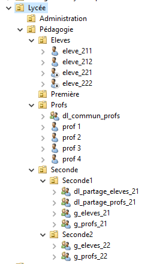

Projet Active Directory Découverte du modèle AGDLP
Objectif
Dans le cadre du Bloc 1 – Active Directory, j’ai réalisé un projet individuel pour découvrir le modèle AGDLP. L’objectif était de comprendre la gestion des droits d’accès en créant une architecture représentant un lycée avec ses classes, professeurs et élèves.
Organisation du domaine
J’ai créé le domaine tvalette.local, structuré en plusieurs unités d’organisation (OU) : Lycée, Administration, Pédagogie, Élèves, Profs, Seconde1 et Seconde2. Cette arborescence permet d’avoir une vision claire de la hiérarchie et des utilisateurs.
Image : Architecture du lycée
Figure 1 – Arborescence du domaine (OU, groupes et comptes).
Mise en place du modèle AGDLP
J’ai créé les utilisateurs, les groupes globaux et les groupes de domaine local. Chaque groupe global regroupe les professeurs ou élèves de chaque classe, et les groupes de domaines locaux servent à gérer les droits sur les dossiers partagés. Les professeurs ont des droits complets, tandis que les élèves ont un accès limité.
Image : Propriétés d’un utilisateur (membres de groupes)

Figure 2 – Exemple d’un compte professeur et de ses appartenances aux groupes.
Partie technique
Un poste client, PC1, a été ajouté au domaine pour montrer la connexion et la gestion des machines dans l’annuaire.
Image : Propriétés de PC1
Figure 3 – Exemple d’un poste client ajouté au domaine.
Bilan
Ce projet m’a permis de comprendre les bases de la gestion des droits et des partages dans un réseau. J’ai rencontré peu de difficultés, surtout liées aux mots de passe utilisateurs, que j’ai su corriger facilement.
Conclusion
Ce travail est un premier pas dans la mise en place d’Active Directory. Il m’a permis de mieux comprendre comment organiser un réseau et gérer les accès. Je souhaite poursuivre ce type de projet pour approfondir mes connaissances.